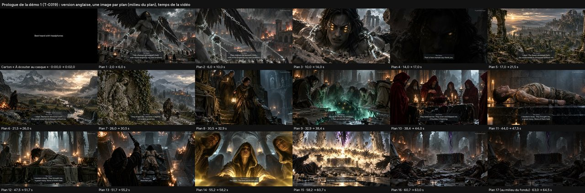
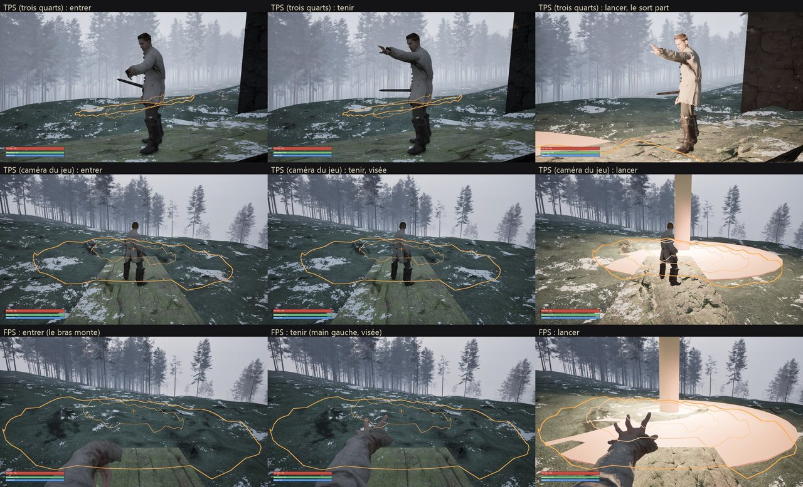

Prologue de la démo 1, monté hors moteur (planche des plans)
ValidéT-0319 · P1-20 · D-322 (10)

Sur le PC : E:\aaa-proto\livrables\demo-1\prologue\ (prologue-en.mp4 : version des investisseurs)
Nuit et journée en totale autonomie (D-322) : depuis le 17/10 à 23:00, le Chef enchaîne seul les deux files, la carte graphique (T-0318, canalisation du grand sort, puis la suite de la démo 1) et le processeur (montage du prologue, documents), et tranche ce qui reste ouvert.
Mise à jour : 18/10/2026 à 02:05
Les deux files de travail (D-317), en continu et en autonomie (D-322).
Carte libre ; T-0318 validé ; T-0320 en cours depuis 01:31.
Animation de canalisation (entrer, tenir, lancer, sortir) au grand sort et aux sorts de zone, en vue à la troisième et à la première personne.
ValidéValidé à 01:30 : règles et essai VERTS, parcours VERT carte libre confirmé (143 et 138 images/s) ; le glissement du pied aux fondus ne se voit pas à distance de jeu. Le pivot du héros vers la cible sera mesuré dans T-0320 (D-322 (14)).
Premiers effets Niagara du prototype : sang sombre et bref, onde d'or du grand sort, veines noires et yeux d'or du héros pendant la magie.
En coursLancé à 01:31 (carte libre), avec la mesure du pivot du héros (D-322 (14)).
Fumée noire, cendres, dissolution en une demi-seconde, trois paires d'yeux dorés ; sons et voix de l'entité calés sur les sous-titres ; vidéo de la scène.
À faireÉcrit à 23:11 ; part après T-0320.
Les 28 répliques du parcours de la démo 1 branchées sur leurs moments (réveil, combat, horde, magie, morts, falaise, sortie), avec la vraie voix et le sous-titre calé ; aucune réplique coupée ni répétée.
À faireÉcrit à 01:54 ; part après T-0321.
Après T-0320 : T-0321 (apparition de l'Ange, avec son et voix), puis P1-17 (déclencheurs de la voix) et P1-18 (affichage).
Palier de 70 % : la file processeur ne lance que des tickets de priorité haute ; rien de prioritaire sans carte pour l'instant.
Les 64 s du prologue montées sur le processeur : images 4K et parallaxe, 9 voix de l'entité, musique recalée, sous-titres anglais et français, carton « À écouter au casque ». Version montrable tout de suite et référence du montage dans Unreal.
ValidéValidé à 00:42 : le prologue de la démo 1 est montrable (64,5 s ; anglais pour les investisseurs, et français ; 4K et 1080p ; voix et mixage tatoués). À écouter au casque : E:/aaa-proto/livrables/demo-1/prologue/prologue-en.mp4.
Six reports relevés le 16 et le 17/10 (répliques du hameau, glossaire anglais, Faune, morts au hasard, prix de l'agente), vérifiés un par un avant d'écrire.
ValidéValidé à 23:21 : les 2 reports sont exacts, les 4 « déjà fait » confirmés.
Montages depuis la bibliothèque, sans téléchargement : le hameau la nuit, les tâches des villageois, le campement des déserteurs, leurs voix de combat, le premier souvenir, les chairs recousues, la boucle du hameau sans bois fendu.
ValidéValidé à 23:53 : 22 sons conformes (sources CC0 ou domaine public, crêtes ≤ −1,4 dBTP, boucles propres, script qui refait tout à l'identique). À écouter : page locale E:/aaa-proto/assets/sons/demo2/ecoute.html.
Comme pour l'entité : chaque réplique du hameau jouée dans la démo 2, une voix de départ par PNJ (critères, domaine public), réglages, ordre, temps de carte. Prépare la génération des voix (file carte).
ValidéValidé à 00:33 : feuille prête pour la génération des voix du hameau (169 prises sûres, ≈ 2 h 35 de carte libre).
Voix du village sans langue reconnaissable, chien, poules, vaches, cheval, loup, monture : seulement en CC0 ou domaine public, sans compte, sans aucune information personnelle dans les requêtes.
ValidéValidé à 01:31 : licences CC0 ou domaine public confirmées en ligne, aucune information personnelle envoyée, 26 sons prêts. Rien n'a encore été écouté par un humain : page d'écoute E:/aaa-proto/assets/sons/demo2/ecoute.html.
Les vraies durées du prologue monté dans son script, et trois petits alignements (glossaire anglais, Topographie, quêtes des Besoins).
ValidéValidé à 01:03 : le script du prologue porte les vraies durées du montage ; glossaire, Topographie et quêtes des Besoins alignés.
Le plan des démos 1 et 2 suit le travail de la nuit : canalisation, prologue monté, sons et voix du hameau préparés.
ValidéValidé à 02:05 : les états des démos 1 et 2 suivent le travail de la nuit (démo 1 : 10 entrées faites, 12 partielles, 2 à faire).
Le prochain travail sans carte viendra des tickets de la carte (montages, vérifications) ou des animations Mixamo quand elles seront téléchargées.
Les images, modèles 3D et animations du jour (sans vidéo copiée dans la page).
T-0319 · P1-20 · D-322 (10)

Sur le PC : E:\aaa-proto\livrables\demo-1\prologue\ (prologue-en.mp4 : version des investisseurs)
T-0318 · P1-12 · D-322 (12)

Sur le PC : E:\aaa-proto\unreal-v2\mesures\t0318\captures\
/point : rien en cours ; carte libre ; quota à 63,2 %.
Réponses du directeur (D-322) : le Chef choisit la file carte ; nuit et journée du 18/10 en totale autonomie, sur cette page ; file processeur en continu.
T-0318 lancé (canalisation du grand sort, P1-12), carte libre.
T-0319 créé et lancé (file processeur) : le prologue monté hors moteur, avec les vraies voix.
Le Chef écrit la suite de la file carte : T-0320 (effets du combat et du grand sort) et T-0321 (apparition de l'Ange, avec son et voix).
T-0322 lancé (petits reports dans les documents, écriture légère). Quota : 63,5 %.
Choix du Chef (D-322 (5) à (7)) : P1-13 coupé en T-0320 et T-0321 ; prologue monté hors moteur d'abord ; sons manquants de la démo 2 montés sans téléchargement.
T-0323 lancé (sons manquants de la démo 2, processeur).
Lien Mixamo envoyé par l'ami du directeur : retenu pour les animations (pas les personnages), D-322 (8). Liste et réglages de téléchargement prêts (E:/aaa-proto/assets/mixamo/LISEZMOI.md) : compte Adobe obligatoire, donc c'est le directeur qui télécharge ; ensuite, un ticket recible et compare.
T-0322 livré : 2 reports faits, 4 déjà faits par d'autres tickets.
Choix du Chef sur les restes de T-0322 (D-322 (9)) : « progresser » a deux anglais pour deux contextes, au registre ; vérification de T-0322 lancée. Les heures de cette page ont été relues sur l'horloge et corrigées (quelques-unes avaient été notées de tête).
T-0322 validé. Quota : 64,0 %.
T-0323 livré (22 sons de la démo 2, montés sans téléchargement) ; vérification lancée. Quota : 64,7 %.
T-0323 validé : les sons manquants de la démo 2 sont prêts à l'écoute.
T-0324 lancé (feuille des voix du hameau, écriture). Quota : 65,2 %.
T-0319 livré : le prologue est monté (64,5 s, anglais et français).
Choix du Chef sur le prologue (D-322 (10)) ; vérification de T-0319 lancée. Quota : 65,4 %.
T-0319 à corriger : informations personnelles écrites dans un fichier et des scripts sur E: (rien de publié, rien d'envoyé), JSON invalide. Mots retirés du rapport par le Chef.
Correction 1 de T-0319 lancée (agent neuf) : contrôle des informations personnelles construit à l'exécution, comme l'outil du site, sans jamais écrire les mots ; JSON valide ; mixage tatoué.
T-0324 livré (feuille des voix du hameau) ; vérification lancée. Quota : 66,2 %.
T-0324 à corriger (4 retouches de forme) ; choix du Chef D-322 (11).
Correction 1 de T-0324 lancée (agent neuf). Quota : 66,6 %.
Correction 1 de T-0324 livrée ; vérification lancée.
T-0324 validé (feuille des voix du hameau).
T-0325 lancé (recherche de sons de la démo 2, processeur). Quota : 66,9 %.
Correction 1 de T-0319 livrée ; vérification lancée. Quota : 67,0 %.
T-0319 validé : le prologue de la démo 1 est montrable.
T-0326 lancé (reports dans le script du prologue et petits alignements). Quota : 67,3 %.
T-0318 livré : canalisation du grand sort ; parcours VERT carte libre (le premier depuis le 16/10).
Choix du Chef D-322 (12) ; vérification de T-0318 lancée (carte graphique). Quota : 67,5 %.
T-0326 livré ; vérification lancée.
T-0326 à corriger (un point) ; correction 1 lancée (agent neuf).
Correction 1 de T-0326 livrée ; vérification lancée.
T-0326 validé. Début de la journée 6 du quota (budget cumulé 85,7 %) ; utilisé : 68,2 %.
T-0325 livré ; choix du Chef D-322 (13) ; vérification lancée. Quota : 68,6 %.
T-0318 validé (canalisation ; parcours VERT carte libre confirmé). Choix du Chef D-322 (14).
T-0325 validé (sons cherchés). T-0320 lancé sur la carte (effets Niagara). Quota : 68,9 %.
T-0327 lancé (mise à jour des états des démos 1 et 2, écriture légère).
T-0327 livré (états des démos) ; choix du Chef D-322 (15) ; vérification lancée. Quota : 69,9 % : palier de 70 % atteint (D-231) : à partir de maintenant, seuls les tickets de priorité haute (prototype des investisseurs, D-304) sont lancés.
T-0328 écrit (P1-17, déclencheurs de la voix de l'entité), pour la file carte après T-0321.
T-0327 à corriger (trois mots) ; correction 1 lancée. Quatre petits fichiers de comparaison laissés sur C: par un vérificateur, sans information personnelle, regardés puis supprimés par le Chef.
T-0327 validé. Quota : 70,5 %. La file processeur se repose : rien de prioritaire sans carte (palier de 70 %, D-231).
Questions en attente du directeur (un seul questionnaire groupé quand tout sera validé, D-295).
3 questions attendent leur réponse. Personne ne les tranche à la place du directeur.
Restes du point 9 de la présentation, que le Chef ne tranche pas (ils engagent l'équipe et votre présentation) : animateurs freelances, nombre de PNJ qui parlent, images, l'équipe.
Pas une question, une demande quand vous voulez : télécharger les animations de la liste (au moins les priorités 1 et 2, ≈ 15 à 20 min) dans E:/aaa-proto/assets/mixamo/, avec les réglages notés. Le Chef lance le reciblage dès qu'elles sont là.
À écouter au casque : E:/aaa-proto/livrables/demo-1/prologue/prologue-en.mp4. Le fond est très baissé sous trois répliques : garder ou remonter ? Et le publier ou non sur le site (la voix de l'entité imite un lecteur réel de LibriVox, ce genre de voix n'a pas été publié jusqu'ici) : (a) le montrer seulement aux investisseurs ; (b) le publier avec la mention « voix générée » ; (c) publier une version sans voix.
E:/aaa-proto/essai/gibier/laie : la laie (modèle, animations, vidéo) · E:/aaa-proto/essai/villageois/villageois-taches.mp4 : les tâches des villageois · E:/aaa-proto/assets/sons/prologue/ecoute.html : la musique et les sons du prologue · D:/aaa-game/.equipe/prototype/etat-demo-1.md : l'état de la démo 1 et les prochains tickets · D:/aaa-game/.equipe/prototype/plan-sonore-demo-1.md : le plan sonore de la démo 1 · https://chipat-neko.github.io/aaa-game-pages/pages/simulation-hameau/page.html : la simulation du hameau à jour · D:/aaa-game/.equipe/prototype/etat-demo-2.md : l'état de la démo 2 et l'ordre proposé · https://chipat-neko.github.io/aaa-game-pages/pages/presentation/page.html : la présentation pour les investisseurs (à jour au 17/10) · https://chipat-neko.github.io/aaa-game-pages/pages/plan/page.html : le plan de production recalculé · E:/aaa-proto/assets/sons/demo1/ecoute.html : les sons ajoutés à la démo 1 · E:/aaa-proto/voix/prototype/j1/ecoute.html : les 37 voix de l'entité (démo 1) · E:/aaa-proto/livrables/demo-1/video-courte/demo1-video-courte.mp4 : la vidéo courte de la démo 1 (pleine résolution)